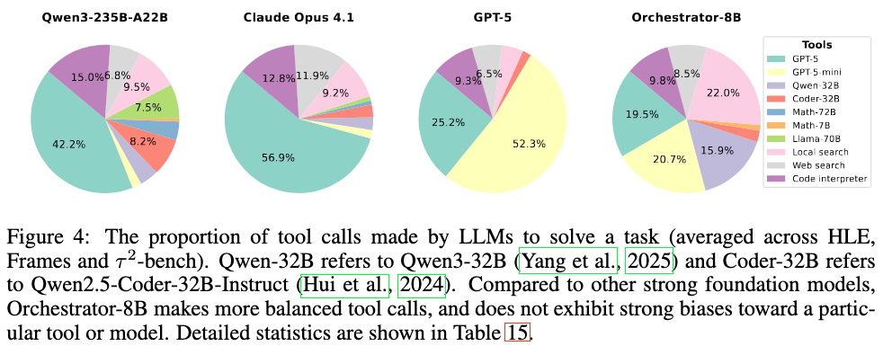
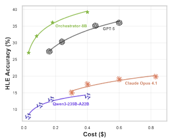
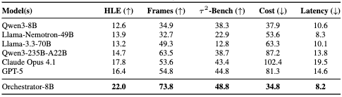
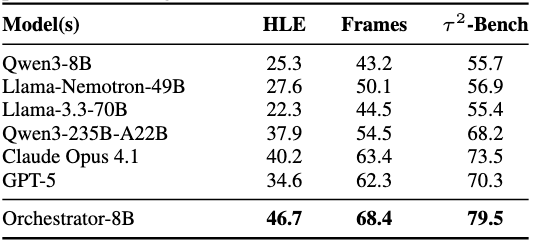

Large language models are powerful generalists, yet solving deep and complex problems such as those of the Humanity’s Last Exam (HLE) remains both conceptually challenging and computationally expensive. We show that small orchestrators managing other models and a variety of tools are able to both push the upper bound of intelligence and improve efficiency in solving difficult agentic tasks. We introduce ToolOrchestra, a method for training small orchestrators that coordinate the use of intelligent tools. ToolOrchestra makes explicit use of reinforcement learning with outcome-, efficiency-, and user-preference-aware rewards. Using ToolOrchestra, we produce Orchestrator, an 8B model that achieves higher accuracy at lower cost than previous tool-use agents while aligning with user preferences on which tools are to be used for a given query. On HLE, Orchestrator achieves a score of 37.1%, outperforming GPT-5 (35.1%) while being 2.5x more efficient. On τ 2-Bench and FRAMES, Orchestrator surpasses GPT-5 by a wide margin while using only about 30% of the cost. Extensive analysis shows that Orchestrator achieves the best trade-off between performance and cost under multiple metrics, and generalizes robustly to previously unseen tools. These results demonstrate that composing diverse tools with a lightweight orchestration model is both more efficient and more effective than existing methods, paving the way for practical and scalable tool-augmented reasoning systems.
Basic tools refer to search, code interpreter and python functions. ToolOrchestra coordinate a diverse set of tools and achieves superior performance over GPT-5 at much lower cost.
Further, Orchestrator-8B invokes a diverse set of tools and does not exihibit strong biases.
In addition, Orchestrator-8B makes better use of compute at test time. It achieves better performance at the same cost, and reaches similar performance at lower cost.

With unseen tools, Orchestrator-8B consistently demonstrates significant improvements in both performance and cost.

Last but not least, we calculate the preference rewards Orchestrator-8B compared to other models. The results show that Orchestrator-8B is superior in following user instructions to use their preferred tools.

@misc{ToolOrchestra,
title={ToolOrchestra: Elevating Intelligence via Efficient Model and Tool Orchestration},
author={Su, Hongjin and Diao, Shizhe and Lu, Ximing and Liu, Mingjie and Xu, Jiacheng and Dong, Xin and Fu, Yonggan and Belcak, Peter and Ye, Hanrong and Yin, Hongxu and Dong, Yi and Bakhturina, Evelina and Yu, Tao and Choi, Yejin and Kautz, Jan and Molchanov, Pavlo}
year={2025},
}